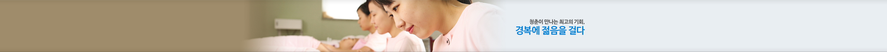
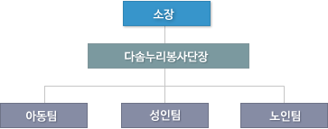

경복소개 - 서브메뉴
홈
경복소개
환영합니다
총장인사말
부설연구소
사업의 배경과 목적
- 1. 사업의 배경
- 노령인구의 증가로 인하여 고령화 사회를 지나 대한민국도 고령사회에 접어들었다. 또한 산업의 발달, 시대의 초고속화 등으로 인하여 산업체 사고 또한 빈번하게 발생하고 있으며 의학의 발달로 과거에는 생존하지 못했던 미숙아 및 고위험군 아동들이 장애를 가진 채 살아가게 되었다. 노령인구의 증가로는 성인별 질환의 증가를 가져오게 되었고 산업의 발달은 산업체 질환의 증가를 가져오게 되었고 의학의 발달은 생명기술의 발달로 장애아동을 수반하게 되었다. 최근에 다 문화 가정 및 맞벌이 부부가 늘면서 적절한 시기에 교육을 받지 못해서 학습장애 아동이 늘어나고 있다. 또한, 최근에 수명이 연장되면서 건강에 대한 관심은 증가되면서 건강 관리 및 성인병 예방에 대한 관심이 증가되고 있다.
그러나 이에 필요한 기관과 인력의 공급이 아직도 부족한 상태여서 적절한 의료 재활서비스를 받지 못하고 있고, 특히 경기북부지역의 장애관련 시설과 기술 및 인력은 타 시도 및 수도권 중에서도 매우 낙후되어 있는 실정이다. 이에 지역사회 아동, 성인, 노인에게 필요한 교육, 자원과 봉사 등이 제공해 주고 대학의 소명을 다하고자 재활복지연구소를 개소하게 되었다. - 2. 사업의 목적
- 첫째, 장애아동 및 성인, 노인성 질환 등을 조기에 발견하고 과학적 진단 및 평가를 통하여 적절하고 효과적인 치료가 이루어 질 수 있도록 치료의 영역에 기여한다.
- 둘째, 발달장애 및 학습장애 아동에게 교육에 필요한 교재 개발 및 기초 연구를 실시한다.
- 셋째, 장애인 및 가족 등 지지세력 위한 재활 교육을 실시한다.
- 넷째, 재활분야에 종사할 수 있는 전문가 양성 교육을 실시한다.
- 다섯째, 재활복지연구소 부설 다솜누리 봉사단의 봉사활동을 통하여 지역사회에 이바지한다.
- 여섯째, 노인성 질환 예방에 관한 교육 및 건강 유지를 위한 교육 등을 실시한다.
- 칠곱째, 치매 환자분들을 위한 재활 프로그램 및 교육 등을 실시한다.
- 여덟째, 지속적인 건강 증진을 위한 자가 운동 프로그램 등 교육을 실시한다.
- 아홉째, 다양한 요인으로 일상생활이 불편한 분들을 위한 일상생활 교육을 실시한다.
- 3. 사업의 범위
- 1) 지역적 범위
- 경기북부지역 및 서울 동북부에 기여하는 것을 원칙으로 하고 필요에 따라 타 지역 범위에도 기여한다.
- 2) 사업의 대상
- ① 발달장애 아동
- ② 학습장애 아동
- ③ 산업체 사고로 인한 근골격계 환자
- ④ 뇌졸중으로 인한 마비환자
- ⑤ 척수손상 질환자
- ⑥ 감각통합장애 아동
- ⑦ 노인성 질환 환자
- ⑧ 치매 환자 및 치매 고 위험군 대상자
- ⑨ 건강에 관심이 있는 지역주민
- ⑩ 일상생활에 제한이 있는 모든 분
운영방침
- 1. 운영전략 및 운영방안
- 재활복지연구소는 경기북부 및 서울 동북부 지역에 다 학문적 재활복지 기관으로 그동안 지역적으로 소외됐던 지역 장애인에게 질 좋은 치료 교육 서비스를 제공하고 다양한 질환에 적합한 교육서비스를 제공하여 신체 적, 정신적, 사회적으로 보다 건강한 삶을 영위할 수 있도록 이바지한다. 또한 대학 설립 목적에 맞는 전문가를 양성하고 장애인과 더불어 사는 사회를 만들기 위하여 활발한 봉사활동을 한다.
- 2. 운영요원 구성
-  다솜누리봉사단장 -> 아동팀, 성인팀, 노인팀" />
- 운영프로그램
- 1) 지역사회 행사 봉사
- 2) 아동관련 시설 봉사
- 3) 노인관련 시설 봉사
- 4) 운동치료
- 5) 감각통합 치료
- 6) 일상생활활동 치료
- 7) 원예치료
- 8) 재활관련 교육 기부
사업내역
상훈사항
- 2006.12.4 제 6회 경기도 자원봉사대회 봉사상 (경기도 의회의장) 수상
- 2006.12.9 포천시 자원봉사대회 장려상 (포천시 의회 의장), 사진부분 우수상(자원봉사센터장) 수상 우수자원봉사자상 (포천시장) 수상
- 2006.12.15 우수자원봉사 표창장 (포천시장) 수상
- 2007.4.20 제27회 장애인의 날 표창장 (포천시장) 수상
- 2007.10.5 제1회 경기도 대학생 자원봉사 공모사업 결과 보고대회 우수상
- 2007.12.6 포천시 자원봉사대회 대상 (포천시장상) 수상
- 2008.12.9 포천시 자원봉사 대축제 표창장 (국회의원, 포천시장) 수상
- 2009.6.4 장애인의 날 감사패 (포천시 장애인시설 협의회장) 수상
- 2009.9.11 제 10회 사회복지의 날 표창장 (국회의원, 포천시 의회 의장, 사회복지협의회장) 수상
- 2010.12.10 포천시 자원봉사 대회 국회의장상 수상
- 2010.12.17 (우수자원봉사) 도봉구 보건소장상 수상
- 2010.12.29 (우수자원봉사) 포천시장상 수상
- 2011.11.28 (우수자원봉사) 의정부 시장상 수상
주요 활동 내용
- 2006년도-
- 1. 포천시 장애인 어울마당 봉사활동 (4.20)
- 2. 포천시 어린이날 한마당 큰잔치 행사 봉사활동(5.5)
- 3. 포천시 장애인 시설 연합회 행사 참여 봉사(5월)
- 4. 포천시 보건소 뇌졸중 주간 재활교실 참여 연계교육 : 작업치료교육 및 의료재활 서비스(5월~6월)
- 5. 서울 정민학교 (지체 부자유아 특수학교) 장애아동 캠프 자원봉사 (5.29~30)
- 6. 경복대학 부설 포천 재활복지 연구소 다솜누리 봉사단 창설 (6. 18)
- 7. 포천시 장애청소년과 함께하는 문화체험 주관하여 봉사활동 (7. 19~20)
- 8. 관내 의료재활서비스: 포천시 가정 파견센터(8월)
- 9. 경기도 포천시 자원봉사센터 전문 자원봉사단으로 가입(8. 30)
- 10. 포천시 장애인시설 자원봉사 : 노아의 집(9. 23)
- 11. 제1회 포천시 장애인 곰두리 체육대회 주관,봉사활동 (10. 10)
- 12. 가평군 장애청소년과 함께하는 문화체험주관 봉사활동 (10. 27~ 28)
- 2007년도-
- 1. 노인전문요양원 방문 봉사활동 (포천시 자혜의 집) (4. 17)
- 2. 장애인 어울림 한마당 봉사활동 (포천시 종합체육관) (4. 20)
- 3. 포천시 어린이 한마당 봉사활동 (포천시 종합체육관) (5. 5)
- 4. 곰두리 두레마을 소풍 봉사활동 (광릉 수목원) (5. 17)
- 5. 노인전문 요양원 방문 봉사활동 (포천시 자혜의 집) (5. 18)
- 6. 포천시 대학생 자원봉사단 발대식 워크숍 (7. 4)
- 7. 구리 장애인 복지회관 봉사활동 (강원도) (7. 17~18)
- 8. 곰두리 두레 마을 summer camp 봉사활동 (포천시) (7.26~27)
- 9. 부평 복지회관 캠프 봉사활동 (강화도) (8. 8~ 10)
- 10. 작업치료 순회교육 봉사활동 (운천 영북 노인대학)(8. 17)
- 11. 장애아동과 함께하는 Let's go pochen 봉사활동 (포천시,강원도)(8. 24)
- 12. 제2회 장애인 한마당 큰잔치 봉사할동 (9. 14)
- 13. 2007 경기도 대학생 자원봉사 워크숍 참석( 10. 5)
- 14. 2007 곰두리 두레 마을 가을 기차 여행 봉사활동 (11. 9)
- 15. 제2회 포천시 장애 청소년과 함께하는 문화체험 (12월)
- 2008년도-
- 1. 경기도 자원봉사센터 공모사업 선정
협약체결 사업명 : 작업치료 교육을 통한 장애인 및 거동 불편한 어르신들 일상생활 증진 서비스 - 2. 제3회 포천시 장애 청소년과 함께하는 문화체험 (12월)
- 3. 장애아동 시설 사랑의 집 봉사활동 (6. 28)
- 4. 세계 적십자의 날 국군일동병원 기념식 및 위문행사 (5. 13)
- 5. 포천시 주간보호센터 곰두리 두레마을 봉사활동 ( 7. 24~ 25)
- 6. 포천시 주간보호센터 곰두리 두레마을 summer 캠프 (7. 24~25)
- 7. 포천시 노인복지센터 재가방문 작업치료 (5월~7월)
- 2009년도-
- 1. 포천시 노인복지 센터 - 독거어르신을 위한 해도두리 프로젝트 (5월~7월)
- 2. 의정부 장애인종합복지관 장애인 울트라 마라톤대회 (5.23)
- 3. 포천시 주간보호센터 곰두리 두레마을 생활훈련 보조- 대중목욕탕 (5.23)
- 4. 포천시 주간보호센터 곰두리 두레마을 썸머캠프 (7.23~24)
- 5. 포천시 자원봉사센터 한마당축제-치어리더공연 (6.15)
- 6. 포천시 보건소와 함께하는 체험학습 (6.25)
- 7. 다지기 2박3일 여름캠프 (7.25~27)
- 8. 제4회 포천시 장애청소년과 함께하는 문화체험 (8.13~14)
- 9. 경복대학 부설 포천재활복지 연구소와 남사람의 집이 함께하는 여름캠프 (8.22)
- 10. 경기도 자원봉사센터 공모사업 선정
- 협약체결 사업명 : 작업치료교육을 통한 장애인 및 거동 불편한 어르신들 일산생활 증진 서비스
- 11. 곰두리 두레마을 주간보호센터 봉사활동 (9월~12월)
- 12. 포천시 보건소와 연계한 독거노인 재가방문 봉사활동 (10월~12월)
- 2010년도-
- 1. 서울시 어린이병원-발달장애 아동을 위한 그룹작업치료 프로그램 진행보조(4월)
- 2. 포천시 임마누엘의 집-정신지체 장애인을 위한 작업치료 프로그램 진행(4월)
- 3. 의정부장애인복지관- 작업치료프로그램 실시(연중)
- 4. 정민학교- 장애인을 위한 보조교사(연중)
- 5. 도봉구치매지원센터- 치매노인의 평가 및 인지치료 보조(연중)
- 6. 포천시 보건소 장애인 사회체험 프로그램 보조(9월)
- 7. 포천시 국민건강보험 지역협의회와 연계한 자원봉사활동(연 4회)
- 8. 경기도 자원봉사센터 공모사업 선정
- 9. 포천시분도마을-장애인의 한지를 이용한 작업치료봉사(6월)
- 10. 한과문화박물관-지역사회장애인을 위한 문화체험행사(7월)
- 2011년도-
- 1. 서울시 정현복지센터 노인잔치 프로그램 진행보조(3월)
- 2. 포천시 자원봉사센터 농어촌 일손돕기 프로그램 참가(4월)
- 3. 의정부장애인복지관- 지역장애인을 위한 작업치료프로그램 실시(연중)
- 4. 정민학교- 장애인을 위한 보조교사 및 식사보조(연중)
- 5. 도봉구치매지원센터- 치매노인의 평가 및 인지치료 보조(연중)
- 6. 포천시 보건소 장애인 문화체험 보조(10월)
- 7. 포천시 국민건강보험 지역협의회와 연계한 자원봉사활동(연 4회)
- 8. 곰두리두레마을 장애인을 위한 작업치료 봉사(11월)
- 2012년도-
- 1. 의정부시장애인종합사회복지관 - 지역장애인을 위한 작업치료프로그램 실시(연중)
- 2. 포천시종합사회복지관 - 지역장애인을 위한 작업치료프로그램 실시(연중)
- 3. 포천노인복지관 - 지역노인분들을 위한 재활운동프로그램 진행(5월 ~ 6월)
- 4. 포천시 보건소 장애인 야외활동 보조 (6월)
- 5. 곰두리 두레마을 장애인을 위한 봉사 (6월)
- 6. 경기북부재활복지센터 - 지역장애인 및 노인분들을 위한 작업치료 봉사 (연중)
- 7. 지역사회 장애 시설 기관 야외활동 - 시설기관 장애인분들을 위한 야외활동 (6월)
- 8. 강북구 치매지원센터 - 치매노인 평가 및 방문 치료 보조(연중)
- 9. 경기도 자원봉사센터 연합 농촌봉사 활동 참가 (6월)
- 10. 2012 경기도 우수프로그램(대학생)지원사업 선정
- 협약체결 사업명 : 작업치료를 통한 지역사회 노인 및 장애인에 대한 의료 재활 봉사활동
- 담당자 : 양경희 교수(khyang@kbu.ac.kr)
- 전화번호 : 031-539-5440